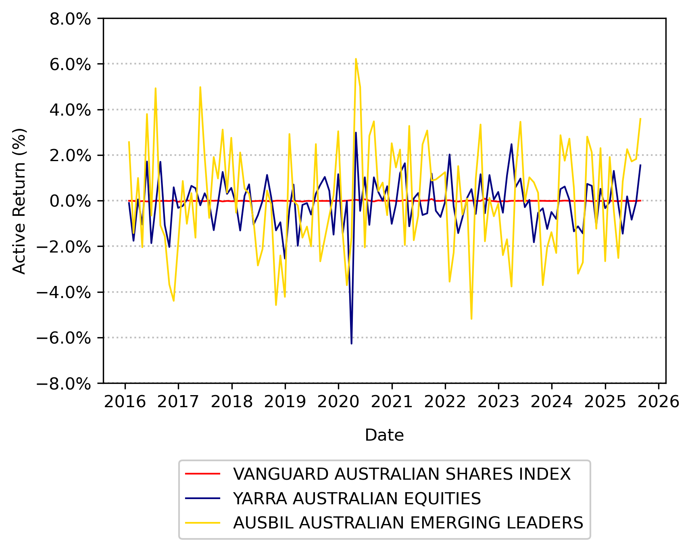

Portfolio Performance Evaluation
FIN 223 Lecture 8
Andrew Ainsworth
University of Wollongong
Lecture outline
- How can we assess the performance of different investment managers?
- There are a large number of metrics available
- Can investment managers select the best assets or can they time the market?
- These are two sources of investment manager skill
- How can we decompose fund performance to identify how the fund generated its performance?
- Performance attribution
- Asset allocation
- Stock selection
- Reading: BKM Ch. 18.1, 18.5, 18.6
Active return and index benchmarks
- Comparisons are made to a pre-selected benchmark portfolio, which is typically an index (e.g. S&P/ASX 300, FTSE 100, S&P500, NASDAQ)
- The benchmark is related to the fund objective
- Active return is the difference in returns between the fund portfolio and the benchmark
\[\text{Active Return} = R_{pt} - R_{bt}\]
- Success of passive managers is measured by the standard deviation of active return, otherwise known as tracking error (TE):
\[TE = Std \ Dev (R_{pt} - R_{bt})\]
- \(R_{pt}\) is the portfolio return over time period \(t\)
- \(R_{bt}\) is the benchmark return over time period \(t\)
Active return and index benchmarks

Adjusting returns for risk
- A simple way to adjust returns for risk is to compare the portfolio’s return with the returns on a comparison universe
- The comparison universe is a group of funds with similar risk characteristics
- Let’s compare the Schroder Equity fund to the large-cap Australian equity fund universe
|
3 months |
1 year |
2 years |
3 years |
5 years |
| Minimum |
−6.27 |
−4.02 |
2.25 |
−11.22 |
0.86 |
| 25th Percentile |
−0.31 |
3.84 |
8.64 |
3.59 |
5.68 |
| Median |
0.23 |
5.80 |
10.70 |
4.94 |
6.81 |
| 75th Percentile |
1.21 |
7.87 |
12.26 |
6.15 |
7.81 |
| Maximum |
7.71 |
28.16 |
19.20 |
15.84 |
15.25 |
| Schroder Equity Fund |
1.32 |
7.33 |
13.96 |
5.77 |
7.20 |
Which measure is appropriate?
- It depends on the investment portfolio
- If the portfolio represents the entire risky investment, then use the Sharpe measure
- The investor should care about total risk
- If the portfolio is one of many combined into a larger investment fund, use the Jensen or the Treynor measure
- The investor is well diversified so should focus on systematic risk
- The Treynor measure is appealing because it weighs excess returns against systematic risk
Which measure is appropriate?
- Consider two funds: the RXK Defensive fund and the BGT Super-Growth fund
- Does RXK or BGT have the best performance?
|
RXK Defensive |
BGT Super-Growth |
Market |
| Beta |
0.9 |
1.6 |
1 |
| Excess Return |
11% |
19% |
10% |
| Alpha |
2% |
3% |
0% |
Which measure is appropriate?
Market timing
- In its pure form, market timing involves shifting funds between a market-index portfolio and a risk-free asset
- Treynor and Mazuy market timing model:
\[R_{pt}-R_{ft} = \alpha_p + \beta_p(R_{mt}-R_{ft}) + \psi_p(R_{mt}-R_{ft})^2 + e_{pt}\]
- A positive value of \(\alpha_p\) is indicative of superior stock selection performance
- A positive value for \(\psi_p\) indicates superior market timing ability
Market timing
- Merton (1981) defines market timing as performance relative to the risk-free rate
- Managers can switch between equity and a risk-free asset, so portfolio return is comprised of a return on the equity market plus a put option on the equity market
- Option is valuable when equity return falls below risk-free rate:
\[R_{pt}-R_{ft} = \alpha_p + \beta_p(R_{mt}-R_{ft}) + \theta_p \text{Max}(0,R_{mt}-R_{ft}) + \xi_{pt}\]
- Positive values of \(\theta\) indicate market timing ability
Conclusion
- There are many different methods for evaluating investment performance
- The key point is to take into account the risk inherent in the portfolio
- We cannot simply compare fund returns without considering fund risk
- Market timing can add value to the fund by increasing the fund beta in up-markets and/or decreasing the fund beta in down markets
- This is difficult to achieve
- Performance attribution is used extensively in industry and decomposes outperformance into asset allocation skill and stock selection
- Does it adequately take into account risk?